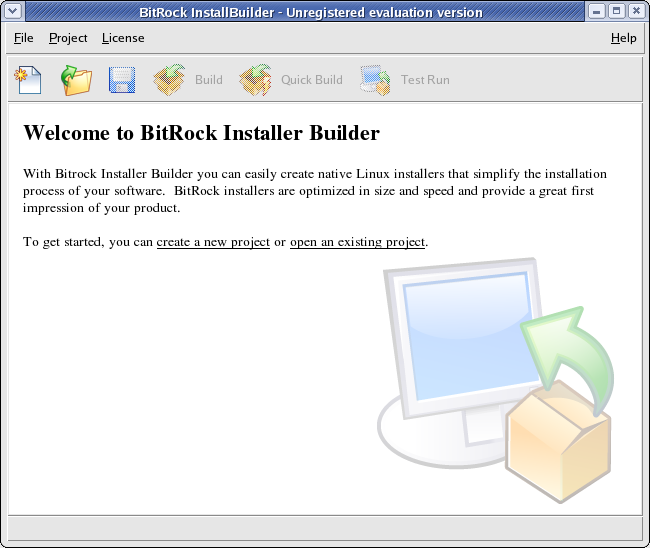
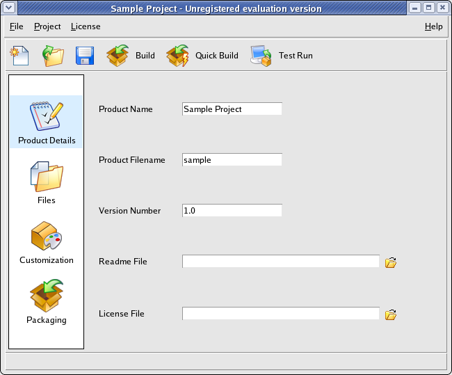
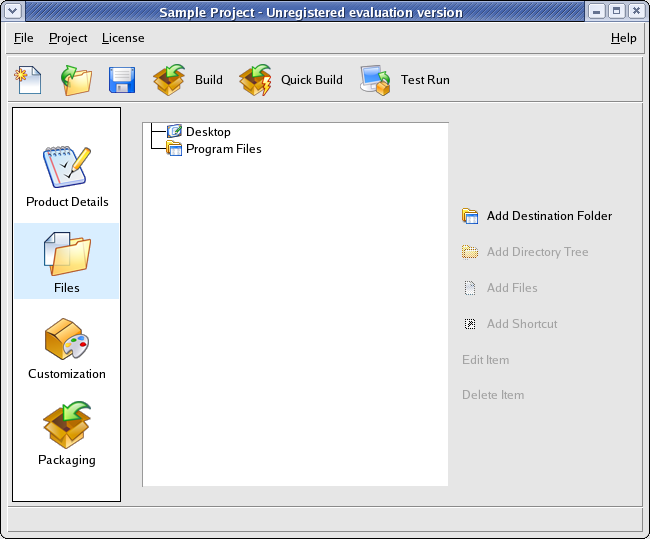
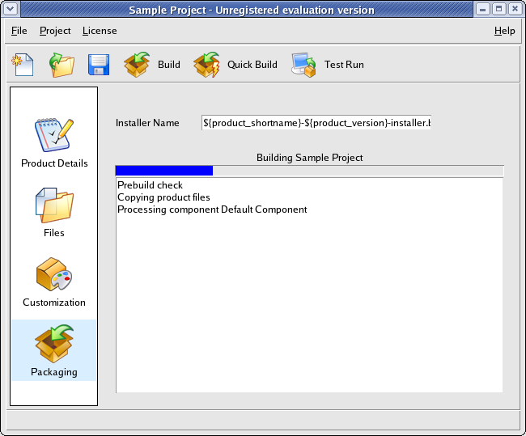
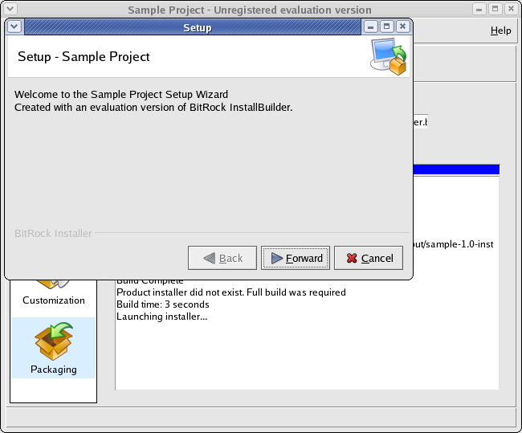

Building Your First Installer
This section explains how to create your first installer in a few simple steps.
Startup and Basic Information
If you are running Gnome or KDE and performed the installation as a regular user,
a shortcut was created on your Desktop. You can either start
BitRock InstallBuilder by double-clicking on it or by invoking the binary from the
command line:
$ /home/user/installbuilder-5.1.1/bin/builder |
If you are running Windows, the installer created the appropriate Start Menu entries.
Additionally, a shortcut was placed on your Desktop.
You can also build installers from the command line. Please refer to the section named "Using the Command Line Interface" later in the document.
The initial screen will appear (Figure 13). Press the "New Project" button or select that option from the File menu on the top left corner. A popup Window will appear, asking you for three pieces of information:
- Product Name: The full product name, as it will be displayed in the installer
- Product Filename: Short version of product name, will be used for naming certain directories and files, and can only contain alphanumeric characters
- Version Number: Product version number, will be used for naming certain directories and files.
The rest of this tutorial assumes you kept the default values: "Sample Project", "sample" and "1.0".
Figure 13 : Main Screen

Once you enter the information, the "Basic settings screen" (Figure 14) will be shown.
Here you can specify additional settings:
- License File: Path to license file that the user must accept in order to install the software
- Readme File: Path to README file that can be shown to the user after installation is completed
- Save Relative Paths: Whether to convert absolute paths to relative when saving project files. This is important if the same project file is used by multiple developers. The path will be relative to the location of the project file.
If you do not want to display a license agreement or a README file during installation, you can leave those fields blank.
| When is it necessary to use the Save Relative Paths option? It is necessary when the same project file is shared by multiple developers
on different machines or when using the same project file on Windows and Unix. This is due to the differences in how
paths are specified on each platform. |
Figure 14 : Basic Settings

Selecting the Files
The next step is to click on the "Files" icon, which will lead to the screen shown in Figure 15.
The "Program Files" folder represents the target installation directory. You can add files and directories
to this folder by selecting the "Program Files" folder and using the "Add File" and "Add Directory Tree" buttons.
You can add multiple files pressing down the Control key and clicking on them in the File selection dialog.
Multiple selection is not available for directories at this time. The selected files and directories will be copied
to the destination the user chooses during installation.
If a folder only supports a particular target platform, such as Linux,
OpenBSD, FreeBSD, IRIX, AIX, Mac OS X, HP-UX, Solaris or Windows, it will only be included in
installers for that particular platform.
Figure 15 : Files Screen

Most applications only need to add files to the main installation directory. The "Advanced Functionality" section
covers how to specify additional installation folders and how to create application shortcuts.
You can now build the installer by pressing the "Build" button. This will take you to the Packaging screen and start the installer
building process, as shown in Figure 16.
If the build process succeeds, an installer named sample-1.0-linux-installer.bin will be
placed at the output directory (C:\Users\user\Documents\InstallBuilder\projects under Windows Vista, as
explained earlier).
If you are building a Windows installer, the file will be named sample-1.0-windows-installer.exe and if you are building a Mac OS X installer, its name will be sample-1.0-osx-installer.app.
If any problem is found, such as a file not being readable, a message will be displayed in red and the build will stop.
Figure 16 : Building the installer

You can test the generated installer by pressing the "Test Run" button, as seen in Figure 17.
| What is the difference between Full Build and Quick build ? Creating an installer can take a long time if your product
is hundreds of megabytes in size. You can use the Quick Build button to avoid rebuilding an installer from scratch if you are just
making changes to installer-specific settings: license and readme file, default installation path, logo image, installation required
by root and product name. Those settings will be updated without having to pack again every product file. Of course, you will need to do a regular
Build if you make changes to the product files themselves (the ones you added in the Files screen) |
You can customize additional installer functionality as explained in the following section.
Figure 17 : Testing the installer

CDROM
It is possible to select a CDROM build target. In this case, a directory is created that includes a folder with common installer files and a setup file for each one of the architectures. This allows you to provide a single CDROM for all platforms, avoiding duplication of data.